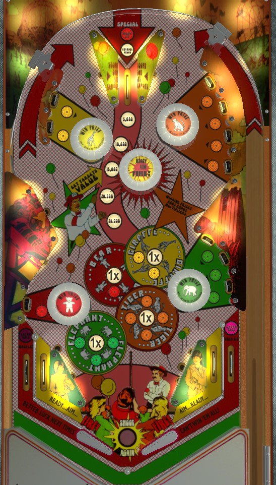

Shoot the center top lane 4 times as quickly as possible to raise the value of lit standup targets to the max of 25,000, then shoot lit targets. To light a bumper and advance bonus multiplier, hit or spot all of the targets of that colour, then hit the flashing bumper.
This lane spots one standup target, increases the target value by 5,000 points up to a maximum of 25,000, and then scores the new target value plus 10,000 points.
The game will look at the bumpers in order (red, yellow, green, orange) when trying to spot a target, i.e., the target spotted will always be the red unless it's been hit already, or it will always be a yellow unless all of red and yellow were hit already, etc.
After 5X bonus has been achieved on a ball, the top center lane will be lit for Special. This will either be an extra ball or a free game, pretty sure it can't be set to points. Only meaningful in casual arcade play.
The target value is pretty much the only thing that gets carried over from ball to ball in this game, so advancing said value up to 25,000 early on should always be top priority. Know how to plunge this lane as a skill shot.
Unlit bumpers and standups are worth 1,000 points.
Lit or flashing bumpers score 2,000 points, and lit standups score the current target value.
Hitting a lit standup target will unlight it. Hit all of one colour's standup targets and the bumper will flash; hit a flashing bumper to turn it on and light its +1 bonus multiplier. Bonus at the end of the ball is equal to 3,000 points for each hit standup target times the bonus multiplier.
When three bumpers are lit (4X bonus is achieved), the out lanes will light for extra ball. For obvious reasons there's no value in going for this, but out lane drains are shockingly rare in this game anyway, so just ignore this outright.
If all 10 standups are hit and all 4 bumpers are lit, the game will automatically collect and drain the full 150,000 points bonus, and then relight all targets to be hit again. There's no separate award for hitting every target a second time, other than the game collecting the bonus again and letting you have a third go around. If the target value is maxed out, just go for these all day.